Como associado da Amazon, o Estrela Negra ganha com compras qualificadas. O preço para você é o mesmo. Fotos oficiais de Celestron, LEGO, Sony, Nintendo e SVBONY; demais fotos de produto ilustrativas (Freepik). Capas dos livros: divulgação das editoras (Companhia das Letras, Intrínseca, Planeta, Valentina, Livraria da Física, Editora UFMG, Alta Books, Blucher, LTC, Arqueiro), aplicadas em foto ilustrativa. Artes dos jogos: divulgação oficial de Rockstar Games, Sony Interactive Entertainment, Hello Games, Mobius Digital e Bethesda.
Por onde começar
O conselho mais repetido em clubes de astronomia: comece com um binóculo. Ele é fácil de usar, mostra muito do céu e continua útil mesmo depois que você comprar um telescópio.
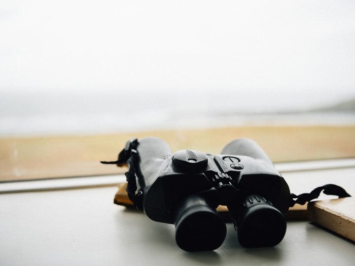
Foto oficial do fabricanteMais indicadoBinóculo Celestron Cometron 7x50
- Para quem
- Primeiro instrumento, para qualquer idade
- O que dá para ver
- Crateras e mares da Lua, as quatro maiores luas de Júpiter como pontinhos, as Plêiades e a Nebulosa de Órion como uma mancha.
- Limite
- Não mostra os anéis de Saturno nem detalhes de planetas: o aumento de 7 vezes é baixo para isso.
Ver na Amazon 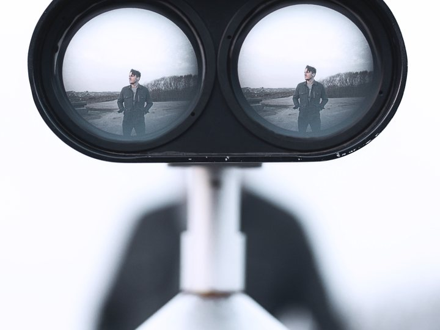
Foto oficial do fabricanteBinóculo Celestron SkyMaster 25x70
- Para quem
- Quem já tem um binóculo e quer ir mais fundo
- O que dá para ver
- Aglomerados de estrelas, cometas brilhantes e a Lua com muito mais detalhe.
- Limite
- É grande e pesado: com aumento de 25 vezes, precisa de tripé para a imagem não tremer.
Ver na AmazonPrimeiro telescópio
Abertura (o diâmetro da lente ou do espelho) é o número que mais importa: quanto maior, mais luz e mais detalhe. Desconfie de caixa que promete aumento de centenas de vezes.
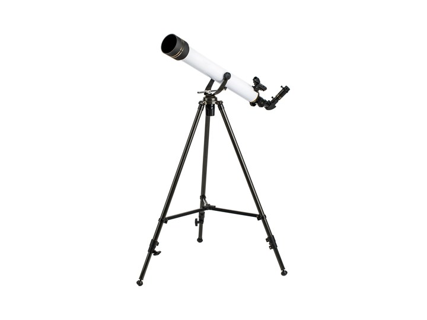
Foto ilustrativaTelescópio refrator azimutal 70 mm (Barsta)
- Para quem
- Quem quer um primeiro telescópio sem gastar muito
- O que dá para ver
- Crateras da Lua, os anéis de Saturno como um pequeno anel, as luas de Júpiter e as fases de Vênus.
- Limite
- Com 70 mm de abertura, nebulosas e galáxias aparecem fracas ou nem aparecem.
Ver na Amazon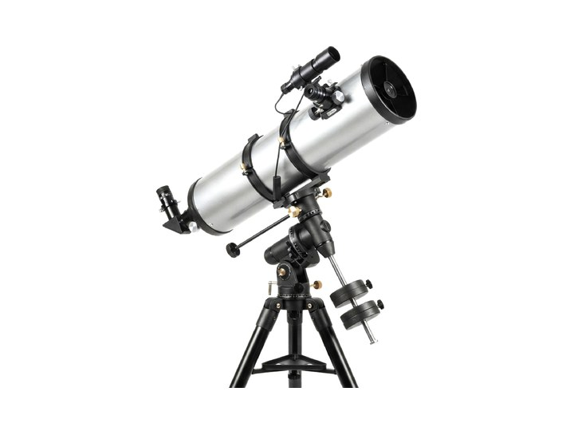
Foto oficial do fabricanteMelhor custo-benefícioTelescópio refletor Celestron AstroMaster 130AZ
- Para quem
- Quem quer ver além da Lua e dos planetas
- O que dá para ver
- Tudo o que o de 70 mm mostra, com mais nitidez, e também aglomerados, a Nebulosa de Órion com estrutura e galáxias brilhantes como manchas. O kit vem com filtro lunar e adaptador para celular.
- Limite
- O espelho precisa de alinhamento (colimação) de vez em quando, e o conjunto ocupa mais espaço.
Ver na Amazon Foto oficial do fabricanteTelescópio Celestron StarSense Explorer LT 127AZ
- Para quem
- Quem não sabe se localizar no céu
- O que dá para ver
- Planetas, a Lua e objetos de céu profundo mais brilhantes. O aplicativo usa a câmera do celular para indicar para onde apontar.
- Limite
- Depende do celular encaixado no suporte, e é mais caro que telescópios de abertura parecida.
Ver na Amazon Livros de astronomia
Para entender o universo antes (e depois) de olhar para ele.
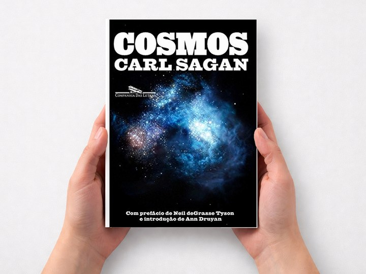
Capa oficialClássicoCosmos, de Carl Sagan
- Para quem
- Quem quer o livro que fez gerações se apaixonarem por astronomia
- O que dá para ver
- Da história da ciência às estrelas, contado com uma escrita que virou referência.
- Limite
- Escrito em 1980: alguns números e descobertas mudaram desde então.
Ver na Amazon Capa oficialPálido ponto azul, de Carl Sagan
- Para quem
- Quem gostou da foto da Terra tirada pela Voyager 1
- O que dá para ver
- O lugar da humanidade no universo e o futuro da exploração espacial.
- Limite
- Mais reflexivo que técnico.
Ver na Amazon 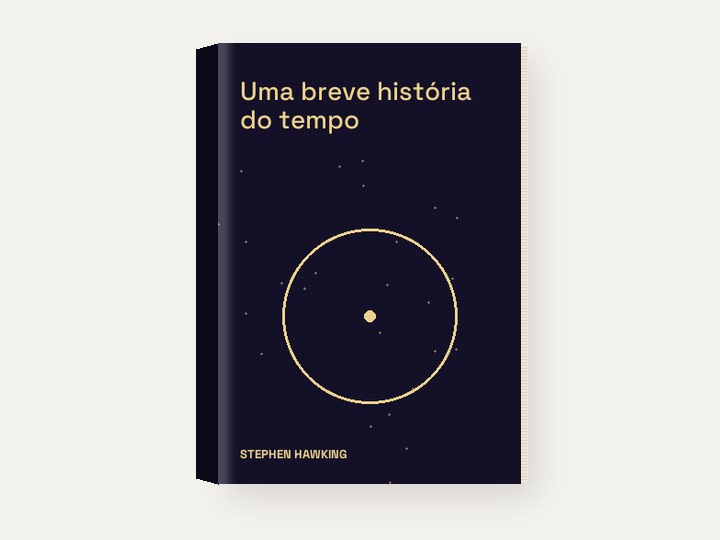
Capa oficialUma breve história do tempo, de Stephen Hawking
- Para quem
- Quem quer entender buracos negros e a origem do universo
- O que dá para ver
- Big Bang, buracos negros, tempo e gravidade, sem fórmulas.
- Limite
- Alguns capítulos exigem calma e releitura.
Ver na Amazon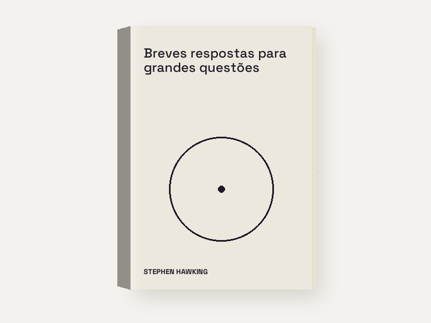
Capa oficialBreves respostas para grandes questões, de Stephen Hawking
- Para quem
- Quem prefere capítulos curtos e diretos
- O que dá para ver
- As perguntas que Hawking mais ouvia, respondidas por ele.
- Limite
- Mistura ciência com opinião pessoal, sinalizada no texto.
Ver na AmazonCapa oficialA história do universo para quem tem pressa, de Colin Stuart
- Para quem
- Quem quer um panorama rápido
- O que dá para ver
- Do Big Bang às descobertas recentes, em linguagem leve.
- Limite
- Panorama: não aprofunda cada tema.
Ver na Amazon 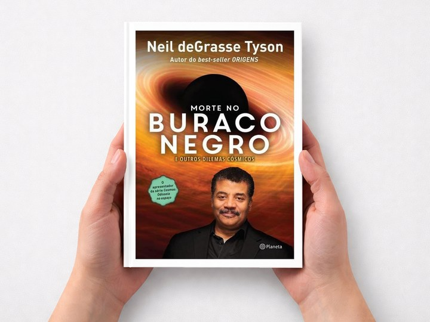
Capa oficialMorte no buraco negro, de Neil deGrasse Tyson
- Para quem
- Quem gosta de astronomia com humor
- O que dá para ver
- Ensaios curtos sobre o universo, do Big Bang aos buracos negros, do astrofísico que apresentou a nova versão de Cosmos.
- Limite
- Coletânea de textos: alguns se repetem em tema.
Ver na AmazonPara aprender a observar
Saber onde olhar vale mais do que qualquer equipamento.
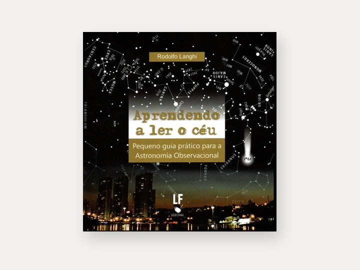
Capa oficialAutor brasileiroAprendendo a ler o céu, de Rodolfo Langhi
- Para quem
- Quem quer reconhecer constelações a olho nu
- O que dá para ver
- Guia prático de astronomia observacional escrito por um pesquisador brasileiro: localizar planetas, estrelas e aglomerados, e saber quando acontecem eclipses e chuvas de meteoros.
- Limite
- Foco em observação, não em teoria.
Ver na Amazon 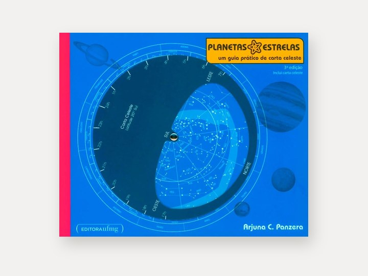
Capa oficialPlanetas e estrelas: guia prático de carta celeste, de Arjuna C. Panzera
- Para quem
- Quem quer um mapa do céu na mão
- O que dá para ver
- Carta celeste para identificar estrelas e planetas.
- Limite
- Confira a latitude indicada na descrição: cartas celestes são feitas para uma faixa de latitude.
Ver na Amazon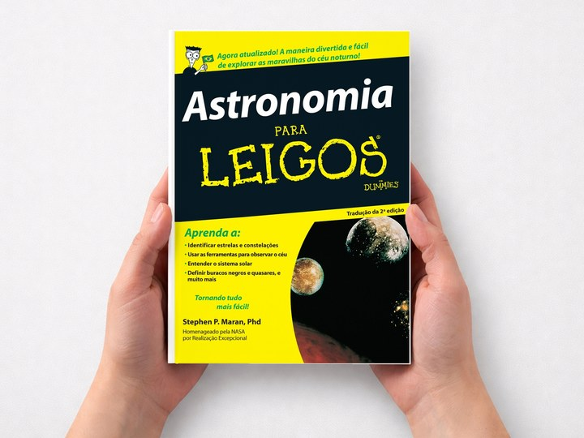
Capa oficialAstronomia para leigos
- Para quem
- Quem está começando do zero
- O que dá para ver
- Do que é cada objeto do céu a como escolher equipamento.
- Limite
- Panorama amplo: cada tema é tratado de forma introdutória.
Ver na AmazonPara estudar física
Os livros que estudantes de física e astronomia usam na graduação.
Capa oficialReferência brasileiraAstronomia e Astrofísica (Kepler de Souza Oliveira Filho e Maria de Fátima Saraiva)
- Para quem
- Quem quer estudar astronomia a sério, em português
- O que dá para ver
- Livro-texto brasileiro, do Sistema Solar à cosmologia, com a matemática.
- Limite
- É um livro de curso: pede base de física e matemática do ensino médio.
Ver na Amazon 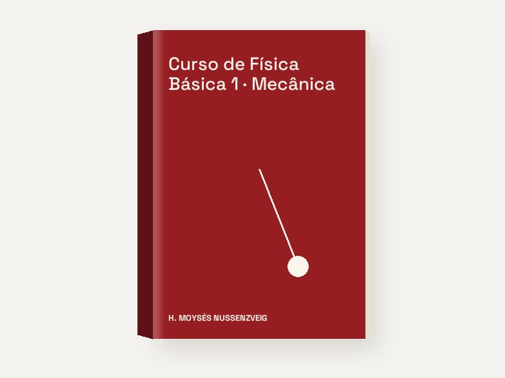
Capa oficialCurso de Física Básica, vol. 1: Mecânica (Moysés Nussenzveig)
- Para quem
- Quem quer a base da física com profundidade
- O que dá para ver
- Mecânica com rigor, usada em cursos de física no Brasil.
- Limite
- Usa cálculo desde o começo.
Ver na Amazon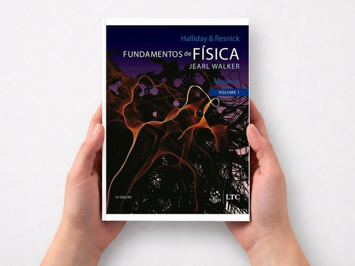
Capa oficialFundamentos de Física, vol. 1: Mecânica (Halliday, Resnick e Walker)
- Para quem
- Quem quer muitos exercícios resolvidos e explicação passo a passo
- O que dá para ver
- O livro mais usado no primeiro ano de exatas.
- Limite
- Edição grande e cara: vale procurar usado.
Ver na AmazonAcessórios de observação
Pequenas coisas que fazem diferença numa noite de céu.
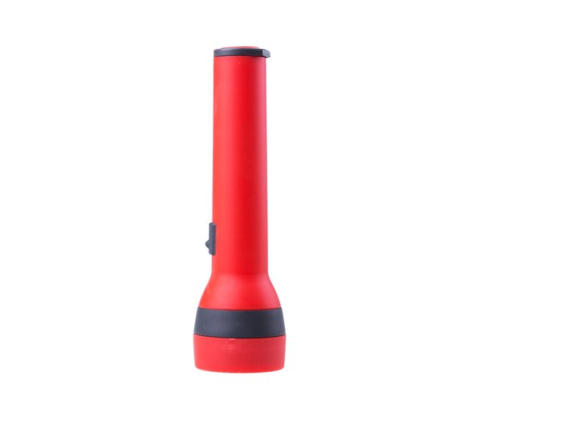
Foto ilustrativaLanterna de luz vermelha
- Para quem
- Qualquer observação noturna
- O que dá para ver
- Luz vermelha não desfaz a adaptação dos olhos ao escuro, que leva uns 20 a 30 minutos para acontecer.
- Limite
- Só luz vermelha: não serve como lanterna comum.
Ver na Amazon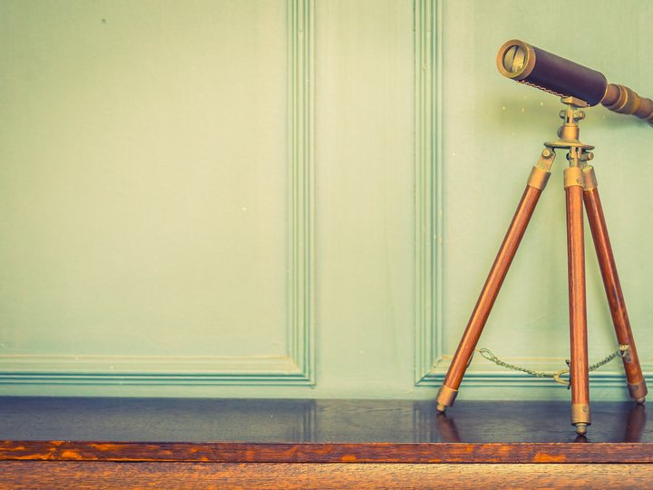
Foto oficial do fabricanteFiltro lunar SVBONY SV139 (1,25")
- Para quem
- Quem já tem telescópio
- O que dá para ver
- Reduz o brilho da Lua cheia, que ofusca, e deixa crateras e mares mais confortáveis de ver.
- Limite
- Só serve em ocular de 1,25 polegada, a medida mais comum em telescópios de entrada.
Ver na Amazon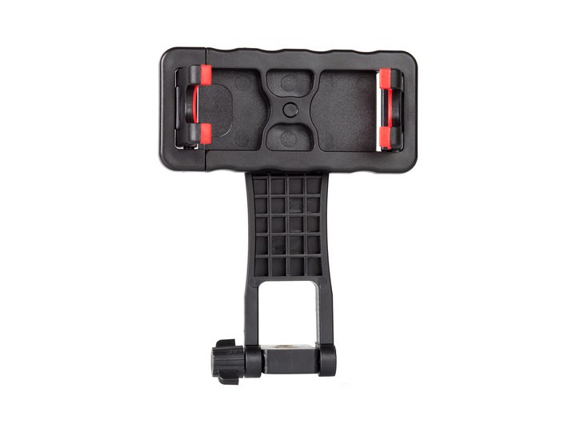
Foto ilustrativaSuporte para fotografar com o celular no telescópio
- Para quem
- Quem quer fotografar a Lua e planetas pela ocular
- O que dá para ver
- Prende o celular alinhado à ocular de telescópio, binóculo ou microscópio.
- Limite
- Funciona melhor com a Lua; planetas exigem paciência para alinhar.
Ver na Amazon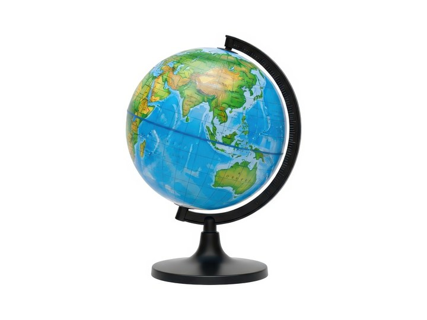
Foto ilustrativaGlobo celeste de 21 cm
- Para quem
- Presente, sala de aula ou estudo
- O que dá para ver
- As constelações vistas de fora da esfera celeste, ótimo para entender o movimento do céu.
- Limite
- Peça de estudo e decoração, não de campo.
Ver na AmazonEu acho que você é nerd igual a mim
Nem tudo precisa ter telescópio. Jogos, LEGO e ficção científica que combinam com quem acompanha o canal, e os video games que estão entre os mais vendidos da Amazon agora.
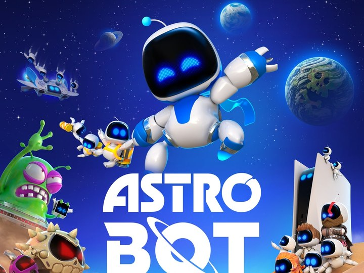
Arte oficial do jogoEspaçoASTRO BOT (PS5)
- Para quem
- Quem quer um jogo de plataforma no espaço, para qualquer idade
- O que dá para ver
- Um robozinho atravessando galáxias inteiras. Foi eleito o Jogo do Ano no The Game Awards 2024.
- Limite
- Exclusivo de PlayStation 5.
Ver na Amazon Arte oficial do jogoFavorito nerdOuter Wilds: Edição Arqueóloga (Switch)
- Para quem
- Quem gosta de mistério e de física
- O que dá para ver
- Um sistema solar em miniatura que acaba em 22 minutos, quando o Sol vira supernova, e recomeça. Você explora para descobrir por quê.
- Limite
- Não tem mapa nem lista de tarefas: dá para se perder (é de propósito).
Ver na Amazon 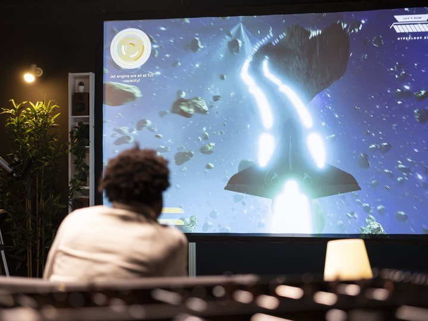
Arte oficial do jogoNo Man's Sky (PS5)
- Para quem
- Quem quer explorar planetas sem fim
- O que dá para ver
- Um universo gerado por algoritmo, com mais de 18 quintilhões de planetas para pousar, explorar e construir.
- Limite
- Os planetas são inventados: a física é de jogo, não de astronomia.
Ver na AmazonArte oficial do jogoStarfield (PS5)
- Para quem
- Quem gosta de RPG longo com naves
- O que dá para ver
- RPG de exploração espacial da Bethesda: monte sua nave e viaje entre sistemas estelares.
- Limite
- Jogo grande e lento no começo; pede muitas horas.
Ver na Amazon Arte oficial do jogoEm altaGrand Theft Auto VI (PS5)
- Para quem
- Quem quer o lançamento mais falado do ano
- O que dá para ver
- Entre os mais vendidos de video game da Amazon agora.
- Limite
- Nada de astronomia aqui, e a classificação indicativa é para adultos.
Ver na Amazon Foto oficial do fabricanteEm altaPlayStation 5 Slim Digital (pacote com ASTRO BOT e Gran Turismo 7)
- Para quem
- Quem ainda não tem console
- O que dá para ver
- O console com dois jogos no pacote, entre os mais vendidos da Amazon.
- Limite
- Versão digital: sem o leitor de disco (vendido à parte), os jogos são só da loja online.
Ver na Amazon 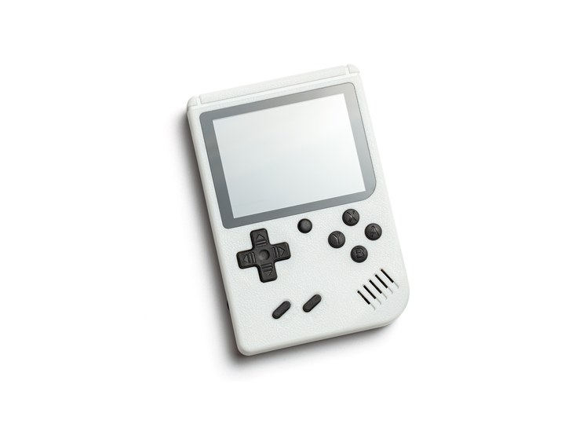
Foto oficial do fabricanteNintendo Switch 2 (pacote com EA Sports FC 27)
- Para quem
- Quem quer jogar em casa e fora dela
- O que dá para ver
- O console portátil da Nintendo com um jogo de futebol no pacote.
- Limite
- Os jogos de Switch 2 não rodam no Switch antigo.
Ver na Amazon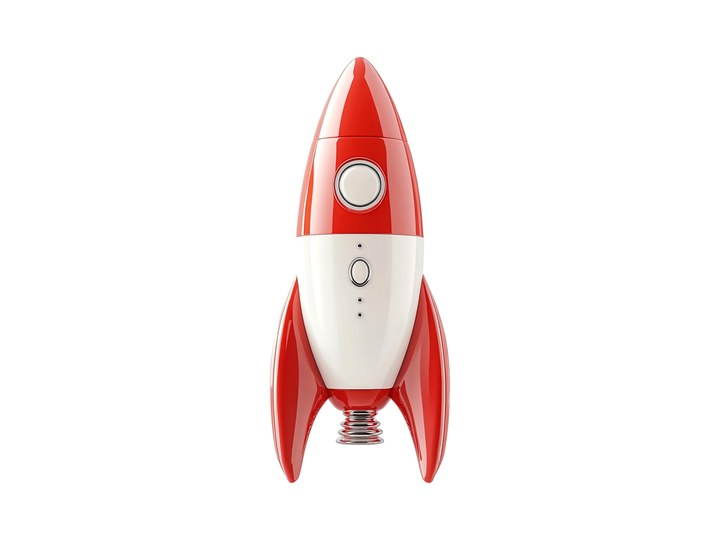
Foto oficial do fabricanteGeekLEGO Technic NASA Artemis (42221)
- Para quem
- Quem gosta de montar e de foguete
- O que dá para ver
- Modelo do foguete SLS do programa Artemis, com 632 peças.
- Limite
- Peça de montar e expor, não de brincar de lançar.
Ver na Amazon 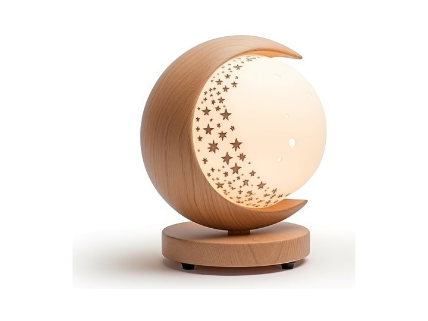
Foto ilustrativaProjetor de galáxias com 12 discos
- Para quem
- Quarto, festa ou criança que ama o espaço
- O que dá para ver
- Projeta nebulosas, galáxias e estrelas no teto.
- Limite
- É decoração: as imagens não mostram o céu real.
Ver na Amazon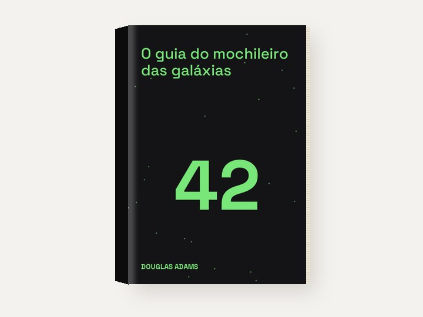
Capa oficialO guia do mochileiro das galáxias (edição ilustrada), de Douglas Adams
- Para quem
- Quem nunca leu (ou quer reler com ilustrações)
- O que dá para ver
- O clássico de humor e ficção científica de onde vem o famoso número 42.
- Limite
- Humor muito britânico: nem todo mundo embarca.
Ver na AmazonCapa oficialPerdido em Marte, de Andy Weir
- Para quem
- Quem gosta de ciência resolvendo problema
- O que dá para ver
- Um astronauta preso em Marte sobrevivendo na base da química, da botânica e da engenharia.
- Limite
- Ficção: algumas licenças, como a tempestade do começo, que em Marte não teria essa força.
Ver na Amazon Capa oficialContato, de Carl Sagan
- Para quem
- Quem gosta de busca por vida fora da Terra
- O que dá para ver
- O romance de Sagan sobre o primeiro sinal de uma civilização extraterrestre, que virou filme em 1997.
- Limite
- Ficção científica com bastante discussão de ciência e fé.
Ver na Amazon Como associado da Amazon, o Estrela Negra ganha com compras qualificadas. O preço para você é o mesmo. Os preços e a disponibilidade mudam na Amazon; confira na página do produto.